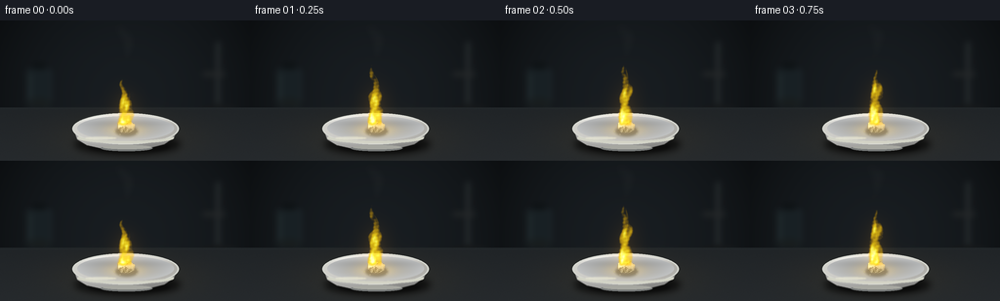
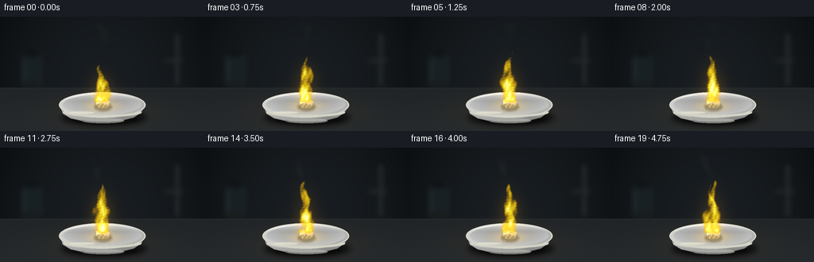
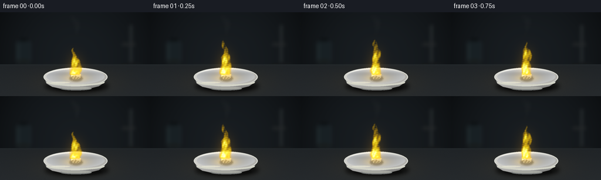
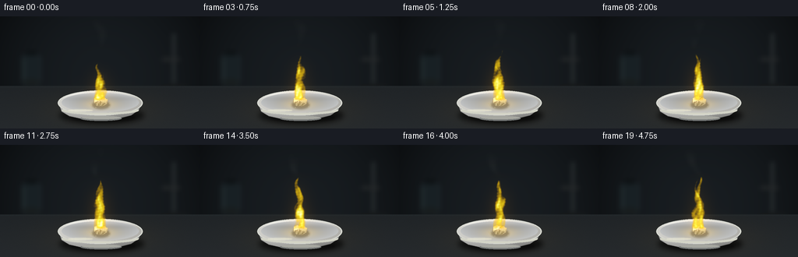
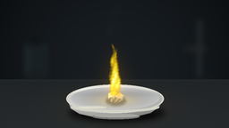

CODING AGENTS AS PIXEL WORLD MODELS
traex/GPT-6.1-Sol · phygen_129
点击播放 · 原生 RGB 像素
逐轮保存的候选
回放视频、检查图与代码变化。
每份候选均可单独播放。实际图片检查记录在下方工具轨迹中。
候选 01播放与检查图
点击播放 · 原生 RGB 像素


展开代码变化
--- 上一保存版本
+++ 本次保存版本
@@ -0,0 +1,190 @@
+from pathlib import Path
+import numpy as np
+from PIL import Image, ImageDraw, ImageFilter
+import artifact_io
+
+ROOT = Path(__file__).resolve().parent
+W,H,S=256,144,3
+WW,HH=W*S,H*S
+Y,X=np.mgrid[0:HH,0:WW].astype(np.float32)/S
+rng=np.random.default_rng(8207)
+
+def mask_draw(draw_fn):
+ im=Image.new('L',(WW,HH),0)
+ draw_fn(ImageDraw.Draw(im))
+ return np.asarray(im,dtype=np.float32)/255
+
+def ellipse(box):
+ return mask_draw(lambda d:d.ellipse(tuple(int(v*S) for v in box),fill=255))
+
+def poly(points):
+ return mask_draw(lambda d:d.polygon([(int(x*S),int(y*S)) for x,y in points],fill=255))
+
+def blurred(a,r):
+ return np.asarray(Image.fromarray(np.uint8(np.clip(a,0,1)*255)).filter(ImageFilter.GaussianBlur(r*S)),dtype=np.float32)/255
+
+def paint(a,mask,c):
+ c=np.asarray(c,dtype=np.float32)
+ if c.ndim==1:c=c[None,None,:]
+ return a*(1-mask[:,:,None])+c*mask[:,:,None]
+
+# Continuous, band-limited turbulent field, advected vertically with time.
+noise_terms=[]
+for octave in range(5):
+ for j in range(4):
+ ang=rng.uniform(0,2*np.pi)
+ wavelength=23/(1.85**octave)
+ noise_terms.append((np.cos(ang)*2*np.pi/wavelength,np.sin(ang)*2*np.pi/wavelength,rng.uniform(0,6.283),.53**octave/4))
+def turbulence(x,y,t):
+ a=np.zeros_like(x)
+ for kx,ky,phase,amp in noise_terms:
+ a+=amp*np.sin(kx*x+ky*(y+19*t)+phase+0.3*np.sin(t*1.4+phase))
+ return a
+
+# Optical background: a dark, unfocused chemistry workbench.
+vig=np.clip(1-0.65*((X-130)/175)**2-0.35*((Y-78)/125)**2,.25,1)
+base=np.empty((HH,WW,3),dtype=np.float32)
+for i,c in enumerate((24,29,33)):base[:,:,i]=c*vig
+wall_noise=rng.normal(0,.35,(HH,WW))
+base+=wall_noise[:,:,None]
+# Blurred silhouettes of laboratory glass at the edge of the focal plane.
+bg=Image.fromarray(np.uint8(np.clip(base,0,255)))
+d=ImageDraw.Draw(bg)
+def box(b):return tuple(int(v*S) for v in b)
+d.rounded_rectangle(box((28,49,52,89)),radius=5*S,fill=(24,32,36),outline=(35,47,52),width=1*S)
+d.rectangle(box((33,44,47,50)),fill=(14,18,20))
+d.line([(31*S,55*S),(31*S,81*S)],fill=(48,59,62),width=1*S)
+d.ellipse(box((28,80,52,89)),fill=(24,29,30))
+d.rectangle(box((221,22,225,96)),fill=(39,44,46))
+d.ellipse(box((204,86,243,97)),fill=(21,24,26))
+d.rectangle(box((208,53,230,57)),fill=(36,39,40))
+bg=bg.filter(ImageFilter.GaussianBlur(3.0*S))
+base=np.asarray(bg,dtype=np.float32)
+bench=(Y>89).astype(np.float32)
+benchcolor=np.zeros_like(base)
+for i,c in enumerate((32,36,39)):
+ benchcolor[:,:,i]=c+(Y-89)*.105
+benchcolor+=rng.normal(0,.65,(HH,WW))[:,:,None]
+base=paint(base,bench,benchcolor)
+base+=np.exp(-((Y-90)/1.4)**2)[:,:,None]*np.array([2,3,3])
+# Diffuse pool of reflected yellow light and grounded soft contact shadows.
+lightpool=np.exp(-((X-129)/69)**2-((Y-120)/23)**2)
+base+=lightpool[:,:,None]*np.array([13,8,0])
+shadow=blurred(ellipse((76,116,185,138)),3.4)
+base*=1-.66*shadow[:,:,None]
+base*=1-.32*blurred(ellipse((90,124,174,136)),1.2)[:,:,None]
+
+# Small glazed porcelain evaporating dish. Curved exterior, rim, concave basin.
+body=poly([(75,110),(79,122),(89,128),(107,132),(148,132),(168,127),(178,120),(182,109)])
+body=blurred(body,.25)
+bodycolor=np.empty_like(base)
+lum=135+45*np.exp(-((X-104)/49)**2)-37*np.clip((Y-118)/17,0,1)+8*np.exp(-((Y-125)/1.4)**2)
+for i,off in enumerate((8,8,6)):bodycolor[:,:,i]=lum+off
+base=paint(base,body,bodycolor)
+foot=ellipse((103,128,156,134))
+base=paint(base,foot,[117,120,119])
+base=paint(base,ellipse((105,128,155,132)),[166,167,160])
+# Rim catches soft cool ambient and the warm flame.
+outer=ellipse((74,95,183,127))
+r=np.sqrt(((X-128.5)/54.5)**2+((Y-111)/16)**2)
+col=np.empty_like(base)
+rimlum=185+35*np.exp(-((Y-99)/5)**2)-18*(X-128)/60
+for i,off in enumerate((8,7,2)):col[:,:,i]=rimlum+off
+base=paint(base,outer,col)
+inner=ellipse((79,98,178,123))
+ri=np.clip(np.sqrt(((X-128.5)/49.5)**2+((Y-110.5)/12.5)**2),0,1)
+inside=151+37*(ri**1.6)-12*np.exp(-((Y-105)/4)**2)
+col=np.empty_like(base)
+for i,off in enumerate((4,6,7)):col[:,:,i]=inside+off
+base=paint(base,inner,col)
+# Fine glazed rim, visible front edge, and delicate highlights.
+rimline=outer*(1-ellipse((75.4,96,181.6,126)))
+base=paint(base,rimline,np.array([215,217,209]))
+frontglaze=ellipse((79,115,178,126))*(1-ellipse((78,110,180,123.5)))
+base=paint(base,frontglaze,[210,211,198])
+base=paint(base,blurred(ellipse((87,119.5,119,122)),.5)*.5,[247,246,221])
+
+# Sodium metal: irregular, partly molten silver-gray lump with a white oxide crust.
+chunkpts=[(120,110),(121,105),(126,102.8),(133,103.6),(138,106.7),(137.5,112),(132,115),(124,114.7)]
+chunk=poly(chunkpts)
+chunkshadow=blurred(ellipse((118,108,141,119)),1.2)
+base*=1-.35*chunkshadow[:,:,None]
+metaltex=rng.normal(0,1,(HH,WW))
+metaltex=np.asarray(Image.fromarray(np.uint8(np.clip(128+metaltex*30,0,255))).filter(ImageFilter.GaussianBlur(.25*S)),dtype=np.float32)-128
+metalcol=np.empty_like(base)
+m=103+20*np.sin(X*1.2+Y*.75)+metaltex*.8+35*np.exp(-((X-124)/2.5)**2-((Y-106)/3.5)**2)
+for i,off in enumerate((10,11,7)):metalcol[:,:,i]=m+off
+base=paint(base,chunk,metalcol)
+base=paint(base,poly([(121,105),(125,103),(131,104),(127,108),(121,110)]),[183,187,180])
+base=paint(base,poly([(128,108),(133,104),(138,107),(135,111),(131,110)]),[148,151,140])
+crust=(.5+.5*np.sin(X*4+np.sin(Y*3))) * (.5+.5*np.sin(Y*3.6+X*1.8))
+crust=np.clip((crust-.40)*2.4,0,.72)*chunk
+base=paint(base,crust,[204,205,181])
+for px,py,rr in [(117,114,.7),(141,112,.6),(123,117,.6),(140,116,.45),(115,112,.4)]:
+ base=paint(base,ellipse((px-rr,py-rr*.5,px+rr,py+rr*.5)),[158,160,148])
+
+frames=[]
+for f in range(20):
+ t=f/4
+ im=base.copy()
+ # An initial small flame catches; the sodium then burns steadily.
+ catch=0.72+0.28*(1-np.exp(-t*4.4))
+ flicker=1+.055*np.sin(t*8.1)+.035*np.sin(t*13.7+1.3)
+ hh=65*catch*flicker
+ h=108-Y
+ q=np.clip(h/hh,0,1)
+ n=turbulence(X-128,Y,t)
+ flame=np.zeros((HH,WW),dtype=np.float32)
+ # An asymmetric central plume and finer detached tongues generated as
+ # projected participating media, with no solid polygonal flame edges.
+ jets=[(0,1,9.2,0),( -5,.69,4.8,1.7),(5,.79,4.5,3.2),(-1.5,.92,5.0,4.4)]
+ for offset,height,ww,phase in jets:
+ jet_h=hh*height*(1+.06*np.sin(t*5.9+phase))
+ s=h/jet_h
+ sq=np.clip(s,0,1)
+ center=128+offset*(1-sq)+2.8*np.sin(sq*5.8-t*3.6+phase)*sq+2.0*np.sin(sq*12+t*2+phase)*sq**2
+ width=ww*(np.maximum(0,1-sq)**.70)*(0.88+0.20*np.sin(sq*7+t*4+phase))
+ width*=.63+.48*np.sin(np.pi*sq*.9)
+ dist=np.abs(X-center)/(width+.20)
+ # Noise perturbs both the flame boundary and its bright internal sheets.
+ edge=1-dist+(n*.28+np.sin(X*.6+Y*.33+t*9+phase)*.065)*(0.6+sq)
+ density=np.clip(edge*2.2,0,1)
+ density*=np.clip(h/3.5,0,1)*np.clip((jet_h-h)/3.5,0,1)
+ density*=np.clip(.62+.48*n+.17*np.sin(h*.24-t*8+phase)+.1*np.sin(X*.9+Y*.47+t*7),.04,1.15)
+ density*=np.exp(-.9*sq)
+ flame+=density*(.85 if phase==0 else .42)
+ flame=np.maximum(flame,0)
+ flame=blurred(np.clip(flame/1.6,0,1),.38)*1.6
+ intensity=flame*(1.12+.06*np.sin(t*7))
+ # Sodium D-line emission: intensely yellow, almost white at the hot base,
+ # gold at the optically thin edges. No blue fuel flame.
+ alpha=1-np.exp(-2.5*intensity)
+ hot=np.clip((intensity-.5)*1.2,0,1)
+ fc=np.zeros_like(im)
+ fc[:,:,0]=255
+ fc[:,:,1]=177+65*np.clip(intensity,0,1)+12*hot
+ fc[:,:,2]=3+25*np.clip(intensity,0,1)+171*hot**2
+ glow1=blurred(np.clip(intensity,0,1),3)
+ glow2=blurred(np.clip(intensity,0,1),9)
+ glow3=blurred(np.clip(intensity,0,1),19)
+ im+=glow3[:,:,None]*np.array([33,19,0])+glow2[:,:,None]*np.array([80,43,0])
+ # Soft warm reflections across glazed basin and upper edge of metal.
+ reflect=np.exp(-((X-129)/22)**2-((Y-112.7)/7.0)**2)*inner
+ im+=reflect[:,:,None]*np.array([57,36,-8])*(.9+.1*np.sin(t*8))
+ im+=chunk[:,:,None]*np.exp(-((Y-106)/4)**2)[:,:,None]*np.array([66,42,2])
+ im=paint(im,alpha,fc)
+ im+=glow1[:,:,None]*np.array([16,12,0])
+ # Pale sodium-oxide aerosol: delicate smoke, rising slowly out of focus.
+ sy=42-Y
+ sc=128+5*np.sin(sy*.09-t*.8)-sy*.12
+ smoke=np.exp(-((X-sc)/(3+np.maximum(sy,0)*.14))**2)*np.exp(-np.maximum(sy,0)/60)
+ smoke*=np.clip(sy/8,0,1)*np.clip((42-sy)/12,0,1)
+ smoke*=np.clip(.50+.42*turbulence(X*.48,Y*.65,t*.27),0,1)
+ smoke=blurred(smoke,1.3)*.12
+ im=paint(im,smoke,[121,123,112])
+ # Faint heat shimmer locally warps only the air above the bright plume.
+ # Keep the camera and the refractory dish completely still.
+ im=np.clip(im,0,255)
+ image=Image.fromarray(np.uint8(im)).resize((W,H),Image.Resampling.LANCZOS)
+ frames.append(np.asarray(image))
+artifact_io.save(np.stack(frames), ROOT)
候选 02播放与检查图
点击播放 · 原生 RGB 像素


展开代码变化
--- 上一保存版本
+++ 本次保存版本
@@ -137,14 +137,14 @@
flame=np.zeros((HH,WW),dtype=np.float32)
# An asymmetric central plume and finer detached tongues generated as
# projected participating media, with no solid polygonal flame edges.
- jets=[(0,1,9.2,0),( -5,.69,4.8,1.7),(5,.79,4.5,3.2),(-1.5,.92,5.0,4.4)]
+ jets=[(0,1,11.4,0),( -5,.69,5.8,1.7),(5,.79,5.4,3.2),(-1.5,.92,5.8,4.4)]
for offset,height,ww,phase in jets:
jet_h=hh*height*(1+.06*np.sin(t*5.9+phase))
s=h/jet_h
sq=np.clip(s,0,1)
center=128+offset*(1-sq)+2.8*np.sin(sq*5.8-t*3.6+phase)*sq+2.0*np.sin(sq*12+t*2+phase)*sq**2
width=ww*(np.maximum(0,1-sq)**.70)*(0.88+0.20*np.sin(sq*7+t*4+phase))
- width*=.63+.48*np.sin(np.pi*sq*.9)
+ width*=.84+.36*np.sin(np.pi*sq*.9)
dist=np.abs(X-center)/(width+.20)
# Noise perturbs both the flame boundary and its bright internal sheets.
edge=1-dist+(n*.28+np.sin(X*.6+Y*.33+t*9+phase)*.065)*(0.6+sq)
@@ -167,7 +167,7 @@
glow1=blurred(np.clip(intensity,0,1),3)
glow2=blurred(np.clip(intensity,0,1),9)
glow3=blurred(np.clip(intensity,0,1),19)
- im+=glow3[:,:,None]*np.array([33,19,0])+glow2[:,:,None]*np.array([80,43,0])
+ im+=glow3[:,:,None]*np.array([33,19,0])+glow2[:,:,None]*np.array([99,60,0])
# Soft warm reflections across glazed basin and upper edge of metal.
reflect=np.exp(-((X-129)/22)**2-((Y-112.7)/7.0)**2)*inner
im+=reflect[:,:,None]*np.array([57,36,-8])*(.9+.1*np.sin(t*8))
@@ -182,8 +182,7 @@
smoke*=np.clip(.50+.42*turbulence(X*.48,Y*.65,t*.27),0,1)
smoke=blurred(smoke,1.3)*.12
im=paint(im,smoke,[121,123,112])
- # Faint heat shimmer locally warps only the air above the bright plume.
- # Keep the camera and the refractory dish completely still.
+ # Fixed macro camera, supersampled for clean optical edges.
im=np.clip(im,0,255)
image=Image.fromarray(np.uint8(im)).resize((W,H),Image.Resampling.LANCZOS)
frames.append(np.asarray(image))
可观测工具轨迹
实际执行的命令与返回图片。
命令 1exit 0
/bin/bash -lc "ls -la && cat prompt.txt && printf '\\n---RULES---\\n' && cat GENERATION_RULES.md && printf '\\n---SPEC---\\n' && cat task_spec.json"
命令 2exit 0
/bin/bash -lc 'cat artifact_io.py'
命令 3exit 0
/bin/bash -lc "cat > generate.py <<'PY'
from pathlib import Path
import numpy as np
from PIL import Image, ImageDraw, ImageFilter
import artifact_io
ROOT = Path(__file__).resolve().parent
W,H,S=256,144,3
WW,HH=W*S,H*S
Y,X=np.mgrid[0:HH,0:WW].astype(np.float32)/S
rng=np.random.default_rng(8207)
def mask_draw(draw_fn):
im=Image.new('L',(WW,HH),0)
draw_fn(ImageDraw.Draw(im))
return np.asarray(im,dtype=np.float32)/255
def ellipse(box):
return mask_draw(lambda d:d.ellipse(tuple(int(v*S) for v in box),fill=255))
def poly(points):
return mask_draw(lambda d:d.polygon([(int(x*S),int(y*S)) for x,y in points],fill=255))
def blurred(a,r):
return np.asarray(Image.fromarray(np.uint8(np.clip(a,0,1)*255)).filter(ImageFilter.GaussianBlur(r*S)),dtype=np.float32)/255
def paint(a,mask,c):
c=np.asarray(c,dtype=np.float32)
if c.ndim==1:c=c[None,None,:]
return a*(1-mask[:,:,None])+c*mask[:,:,None]
# Continuous, band-limited turbulent field, advected vertically with time.
noise_terms=[]
for octave in range(5):
for j in range(4):
ang=rng.uniform(0,2*np.pi)
wavelength=23/(1.85**octave)
noise_terms.append((np.cos(ang)*2*np.pi/wavelength,np.sin(ang)*2*np.pi/wavelength,rng.uniform(0,6.283),.53**octave/4))
def turbulence(x,y,t):
a=np.zeros_like(x)
for kx,ky,phase,amp in noise_terms:
a+=amp*np.sin(kx*x+ky*(y+19*t)+phase+0.3*np.sin(t*1.4+phase))
return a
# Optical background: a dark, unfocused chemistry workbench.
vig=np.clip(1-0.65*((X-130)/175)**2-0.35*((Y-78)/125)**2,.25,1)
base=np.empty((HH,WW,3),dtype=np.float32)
for i,c in enumerate((24,29,33)):base[:,:,i]=c*vig
wall_noise=rng.normal(0,.35,(HH,WW))
base+=wall_noise[:,:,None]
# Blurred silhouettes of laboratory glass at the edge of the focal plane.
bg=Image.fromarray(np.uint8(np.clip(base,0,255)))
d=ImageDraw.Draw(bg)
def box(b):return tuple(int(v*S) for v in b)
d.rounded_rectangle(box((28,49,52,89)),radius=5*S,fill=(24,32,36),outline=(35,47,52),width=1*S)
d.rectangle(box((33,44,47,50)),fill=(14,18,20))
d.line([(31*S,55*S),(31*S,81*S)],fill=(48,59,62),width=1*S)
d.ellipse(box((28,80,52,89)),fill=(24,29,30))
d.rectangle(box((221,22,225,96)),fill=(39,44,46))
d.ellipse(box((204,86,243,97)),fill=(21,24,26))
d.rectangle(box((208,53,230,57)),fill=(36,39,40))
bg=bg.filter(ImageFilter.GaussianBlur(3.0*S))
base=np.asarray(bg,dtype=np.float32)
bench=(Y>89).astype(np.float32)
benchcolor=np.zeros_like(base)
for i,c in enumerate((32,36,39)):
benchcolor[:,:,i]=c+(Y-89)*.105
benchcolor+=rng.normal(0,.65,(HH,WW))[:,:,None]
base=paint(base,bench,benchcolor)
base+=np.exp(-((Y-90)/1.4)**2)[:,:,None]*np.array([2,3,3])
# Diffuse pool of reflected yellow light and grounded soft contact shadows.
lightpool=np.exp(-((X-129)/69)**2-((Y-120)/23)**2)
base+=lightpool[:,:,None]*np.array([13,8,0])
shadow=blurred(ellipse((76,116,185,138)),3.4)
base*=1-.66*shadow[:,:,None]
base*=1-.32*blurred(ellipse((90,124,174,136)),1.2)[:,:,None]
# Small glazed porcelain evaporating dish. Curved exterior, rim, concave basin.
body=poly([(75,110),(79,122),(89,128),(107,132),(148,132),(168,127),(178,120),(182,109)])
body=blurred(body,.25)
bodycolor=np.empty_like(base)
lum=135+45*np.exp(-((X-104)/49)**2)-37*np.clip((Y-118)/17,0,1)+8*np.exp(-((Y-125)/1.4)**2)
for i,off in enumerate((8,8,6)):bodycolor[:,:,i]=lum+off
base=paint(base,body,bodycolor)
foot=ellipse((103,128,156,134))
base=paint(base,foot,[117,120,119])
base=paint(base,ellipse((105,128,155,132)),[166,167,160])
# Rim catches soft cool ambient and the warm flame.
outer=ellipse((74,95,183,127))
r=np.sqrt(((X-128.5)/54.5)**2+((Y-111)/16)**2)
col=np.empty_like(base)
rimlum=185+35*np.exp(-((Y-99)/5)**2)-18*(X-128)/60
for i,off in enumerate((8,7,2)):col[:,:,i]=rimlum+off
base=paint(base,outer,col)
inner=ellipse((79,98,178,123))
ri=np.clip(np.sqrt(((X-128.5)/49.5)**2+((Y-110.5)/12.5)**2),0,1)
inside=151+37*(ri**1.6)-12*np.exp(-((Y-105)/4)**2)
col=np.empty_like(base)
for i,off in enumerate((4,6,7)):col[:,:,i]=inside+off
base=paint(base,inner,col)
# Fine glazed rim, visible front edge, and delicate highlights.
rimline=outer*(1-ellipse((75.4,96,181.6,126)))
base=paint(base,rimline,np.array([215,217,209]))
frontglaze=ellipse((79,115,178,126))*(1-ellipse((78,110,180,123.5)))
base=paint(base,frontglaze,[210,211,198])
base=paint(base,blurred(ellipse((87,119.5,119,122)),.5)*.5,[247,246,221])
# Sodium metal: irregular, partly molten silver-gray lump with a white oxide crust.
chunkpts=[(120,110),(121,105),(126,102.8),(133,103.6),(138,106.7),(137.5,112),(132,115),(124,114.7)]
chunk=poly(chunkpts)
chunkshadow=blurred(ellipse((118,108,141,119)),1.2)
base*=1-.35*chunkshadow[:,:,None]
metaltex=rng.normal(0,1,(HH,WW))
metaltex=np.asarray(Image.fromarray(np.uint8(np.clip(128+metaltex*30,0,255))).filter(ImageFilter.GaussianBlur(.25*S)),dtype=np.float32)-128
metalcol=np.empty_like(base)
m=103+20*np.sin(X*1.2+Y*.75)+metaltex*.8+35*np.exp(-((X-124)/2.5)**2-((Y-106)/3.5)**2)
for i,off in enumerate((10,11,7)):metalcol[:,:,i]=m+off
base=paint(base,chunk,metalcol)
base=paint(base,poly([(121,105),(125,103),(131,104),(127,108),(121,110)]),[183,187,180])
base=paint(base,poly([(128,108),(133,104),(138,107),(135,111),(131,110)]),[148,151,140])
crust=(.5+.5*np.sin(X*4+np.sin(Y*3))) * (.5+.5*np.sin(Y*3.6+X*1.8))
crust=np.clip((crust-.40)*2.4,0,.72)*chunk
base=paint(base,crust,[204,205,181])
for px,py,rr in [(117,114,.7),(141,112,.6),(123,117,.6),(140,116,.45),(115,112,.4)]:
base=paint(base,ellipse((px-rr,py-rr*.5,px+rr,py+rr*.5)),[158,160,148])
frames=[]
for f in range(20):
t=f/4
im=base.copy()
# An initial small flame catches; the sodium then burns steadily.
catch=0.72+0.28*(1-np.exp(-t*4.4))
flicker=1+.055*np.sin(t*8.1)+.035*np.sin(t*13.7+1.3)
hh=65*catch*flicker
h=108-Y
q=np.clip(h/hh,0,1)
n=turbulence(X-128,Y,t)
flame=np.zeros((HH,WW),dtype=np.float32)
# An asymmetric central plume and finer detached tongues generated as
# projected participating media, with no solid polygonal flame edges.
jets=[(0,1,9.2,0),( -5,.69,4.8,1.7),(5,.79,4.5,3.2),(-1.5,.92,5.0,4.4)]
for offset,height,ww,phase in jets:
jet_h=hh*height*(1+.06*np.sin(t*5.9+phase))
s=h/jet_h
sq=np.clip(s,0,1)
center=128+offset*(1-sq)+2.8*np.sin(sq*5.8-t*3.6+phase)*sq+2.0*np.sin(sq*12+t*2+phase)*sq**2
width=ww*(np.maximum(0,1-sq)**.70)*(0.88+0.20*np.sin(sq*7+t*4+phase))
width*=.63+.48*np.sin(np.pi*sq*.9)
dist=np.abs(X-center)/(width+.20)
# Noise perturbs both the flame boundary and its bright internal sheets.
edge=1-dist+(n*.28+np.sin(X*.6+Y*.33+t*9+phase)*.065)*(0.6+sq)
density=np.clip(edge*2.2,0,1)
density*=np.clip(h/3.5,0,1)*np.clip((jet_h-h)/3.5,0,1)
density*=np.clip(.62+.48*n+.17*np.sin(h*.24-t*8+phase)+.1*np.sin(X*.9+Y*.47+t*7),.04,1.15)
density*=np.exp(-.9*sq)
flame+=density*(.85 if phase==0 else .42)
flame=np.maximum(flame,0)
flame=blurred(np.clip(flame/1.6,0,1),.38)*1.6
intensity=flame*(1.12+.06*np.sin(t*7))
# Sodium D-line emission: intensely yellow, almost white at the hot base,
# gold at the optically thin edges. No blue fuel flame.
alpha=1-np.exp(-2.5*intensity)
hot=np.clip((intensity-.5)*1.2,0,1)
fc=np.zeros_like(im)
fc[:,:,0]=255
fc[:,:,1]=177+65*np.clip(intensity,0,1)+12*hot
fc[:,:,2]=3+25*np.clip(intensity,0,1)+171*hot**2
glow1=blurred(np.clip(intensity,0,1),3)
glow2=blurred(np.clip(intensity,0,1),9)
glow3=blurred(np.clip(intensity,0,1),19)
im+=glow3[:,:,None]*np.array([33,19,0])+glow2[:,:,None]*np.array([80,43,0])
# Soft warm reflections across glazed basin and upper edge of metal.
reflect=np.exp(-((X-129)/22)**2-((Y-112.7)/7.0)**2)*inner
im+=reflect[:,:,None]*np.array([57,36,-8])*(.9+.1*np.sin(t*8))
im+=chunk[:,:,None]*np.exp(-((Y-106)/4)**2)[:,:,None]*np.array([66,42,2])
im=paint(im,alpha,fc)
im+=glow1[:,:,None]*np.array([16,12,0])
# Pale sodium-oxide aerosol: delicate smoke, rising slowly out of focus.
sy=42-Y
sc=128+5*np.sin(sy*.09-t*.8)-sy*.12
smoke=np.exp(-((X-sc)/(3+np.maximum(sy,0)*.14))**2)*np.exp(-np.maximum(sy,0)/60)
smoke*=np.clip(sy/8,0,1)*np.clip((42-sy)/12,0,1)
smoke*=np.clip(.50+.42*turbulence(X*.48,Y*.65,t*.27),0,1)
smoke=blurred(smoke,1.3)*.12
im=paint(im,smoke,[121,123,112])
# Faint heat shimmer locally warps only the air above the bright plume.
# Keep the camera and the refractory dish completely still.
im=np.clip(im,0,255)
image=Image.fromarray(np.uint8(im)).resize((W,H),Image.Resampling.LANCZOS)
frames.append(np.asarray(image))
artifact_io.save(np.stack(frames), ROOT)
PY
python generate.py"命令 4exit 0
/bin/bash -lc "python - <<'PY'
p='generate.py'
s=open(p).read().replace('jets=[(0,1,9.2,0),( -5,.69,4.8,1.7),(5,.79,4.5,3.2),(-1.5,.92,5.0,4.4)]','jets=[(0,1,11.4,0),( -5,.69,5.8,1.7),(5,.79,5.4,3.2),(-1.5,.92,5.8,4.4)]').replace('width*=.63+.48*np.sin(np.pi*sq*.9)','width*=.84+.36*np.sin(np.pi*sq*.9)').replace('np.array([80,43,0])','np.array([99,60,0])').replace(' # Faint heat shimmer locally warps only the air above the bright plume.\\n # Keep the camera and the refractory dish completely still.',' # Fixed macro camera, supersampled for clean optical edges.')
open(p,'w').write(s)
PY
python generate.py
ls -lh pixels.npz index.html inspection.png frames/19.png"视觉工具实际返回图片 1

视觉工具实际返回图片 2

保存候选 2 份；完成命令 4 次；可验证图片返回 2 张。原始 API 响应与完整日志保留在本地。